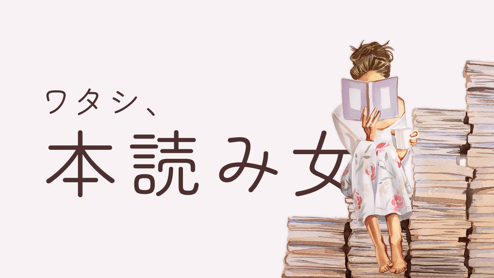
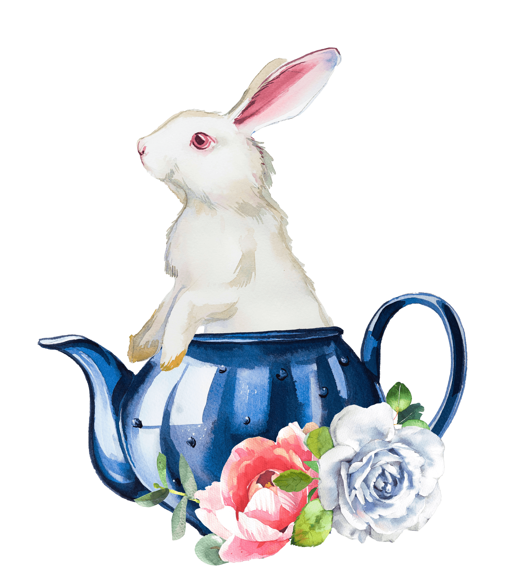
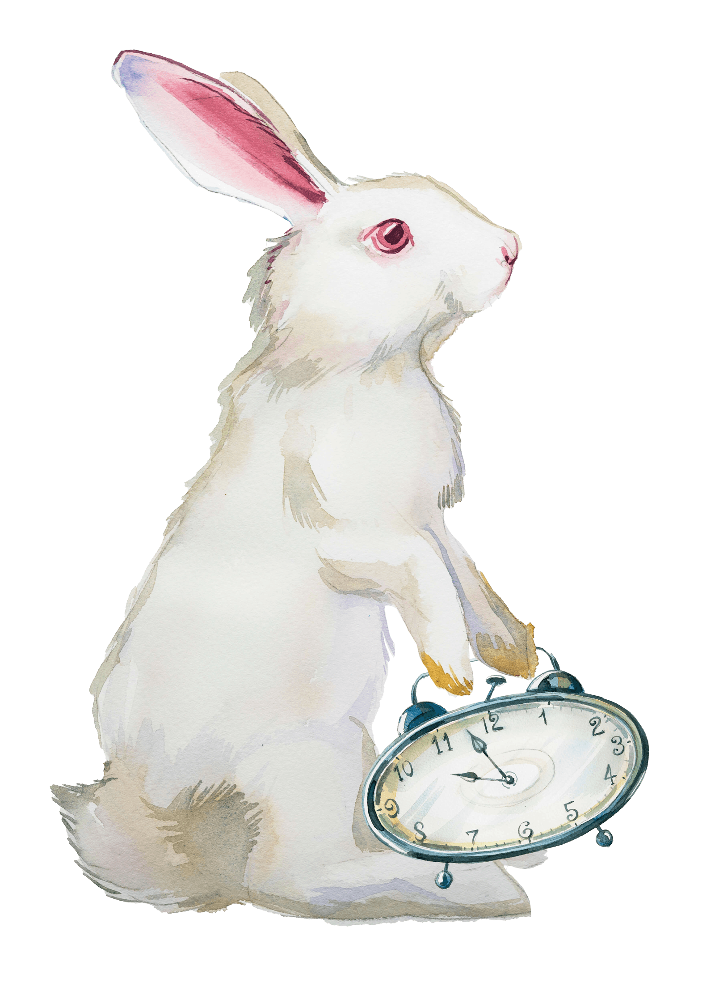

『ワタシ、本読み女』は、スマホの通知音や慌ただしい日常から少しだけ離れて、
ページをめくる音と活字の匂いに包まれるための場所。

「どこにも自分の居場所がないような気がしていた日の夜に読みました。主人公の葛藤がまるで自分のことのように思えて、静かに涙がこぼれました。読み終わったあと、少しだけ優しくなれた気がします。」
「忙しい毎日に追われて忘れかけていた『自分自身の時間』を取り戻せた感覚です。静かな図書館の空気感が画面越しに伝わってきて、読み進めるほどに心が軽くなっていくのを感じました。」
「古典って難しそうと思っていましたが、驚くほどすんなり世界観に入り込めました！登場人物たちの言葉や悩みが今の私と重なる部分がたくさんあって、古典がこんなに身近に感じられたのは初めてです。」